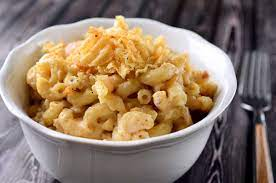

French onion mac and cheese Recipe

Cooktimes
cook time is around 30 mins for a full serving of 6 plates!
Dont skip out on this recipe, you might think "gross french onion in mac and cheese" trust us it is so good!
Like some of the other recipes this one does require a good amount of ingrediants so before you dive in check out the list below.
Ingrediants needed
- 4 tablespoons unsalted butter, divided
- 2 large onions, very thinly sliced
- 1 teaspoon dried thyme
- 1 bay leaf
- 1 pinch salt and ground black pepper to taste
- 1 (16 ounce) package elbow macaroni
- 2 tablespoons all-purpose flour
- 1 cup beef broth
- 1 cup milk
- 1 pinch freshly grated nutmeg, or to taste
- ¾ pound shredded Gruyere cheese
Wow that was alot of stuff huh? dont worry the hard part is done! lets go down to the steps to cook this!
Step by step
- Melt 2 tablespoons butter in a large skillet over medium-high heat. Cook and stir onions, thyme, and bay leaf in the butter for 5 minutes; season with salt and pepper. Reduce the heat to medium-low and cook until onions are browned, 10 to 15 minutes. Transfer to a plate and discard the bay leaf. Reserve the skillet.
- Bring a large pot of lightly salted water to a boil. Cook elbow macaroni in the boiling water, stirring occasionally, until tender yet firm to the bite, about 8 minutes.
- Meanwhile, melt remaining butter in the reserved skillet over medium heat. Whisk in flour for 1 minute, then whisk in beef broth and milk and bring to a boil; season with nutmeg, salt, and pepper. Reduce heat and cook until thickened, about 5 minutes. Stir in Gruyere cheese until melted.
- Drain macaroni and toss with onion and sauce until well combined.
Enjoy as much as we did! be sure to checkout the other recipes on the main website and have fun.